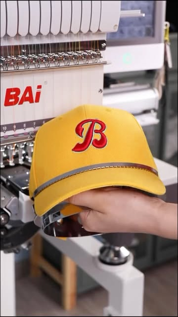
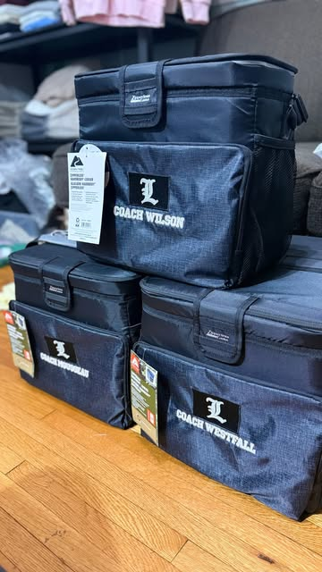
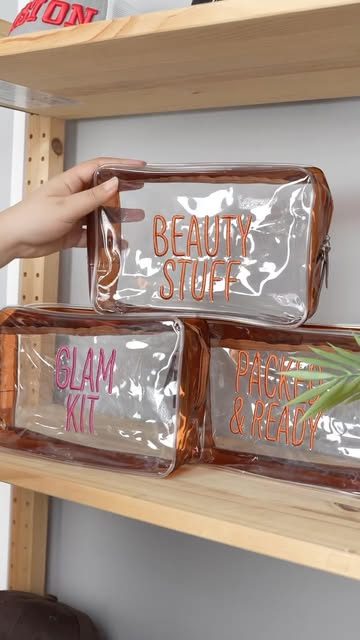
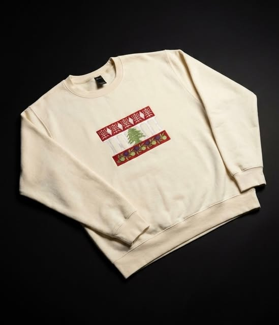
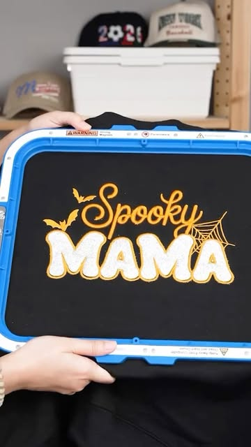
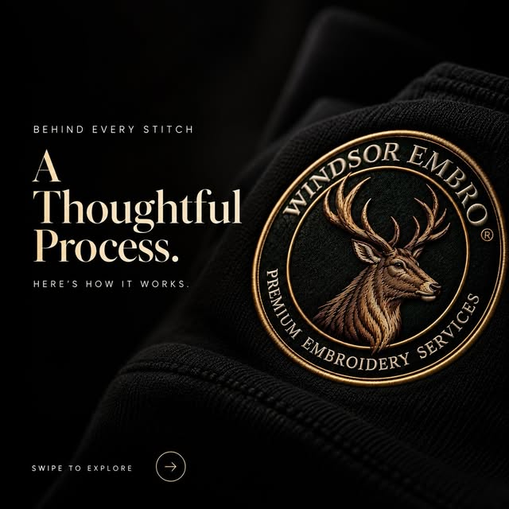

Share the idea.
Start with your design, photo, drawing or text. Tell us about the piece and where you’d like the embroidery.
WindsorEmbro
Names. Memories. Little things that mean everything.
Custom embroidery. Windsor, Ontario.
Real pieces from @windsor.embro ↗. Select a photo to see its story.
Designed around you.
A pet’s portrait. A child’s drawing. Your name, your brand, your favourite words. We turn pixels into stitches, so the things you care about become something you can wear and keep.
Custom embroidery.
Windsor, Ontario.
From our studio to your feed.
Discover @windsor.embro ↗
Every image opens its original post.

View on Instagram ↗Your mark. Front and centre.HEADWEAR · LETTERING
View on Instagram ↗An identity that travelsBAGS · BRANDED DETAILSView on Instagram ↗A name they’ll grow withBABY GIFTS · PERSONALISED NAMES
View on Instagram ↗Little things. All yours.POUCHES · PERSONALISED ACCESSORIES
View on Instagram ↗Everyday, with a little meaningCREWNECKS · TEXT IN THREAD
View on Instagram ↗A little seasonal spiritSEASONAL DESIGNS · IN THE MAKINGA selection of projects from Windsor Embro’s Instagram. Custom work is discussed individually.
8 stories shown
TURNING PIXELS INTO STITCHES
Your design. Digitised. Test stitched.
Then brought to life in embroidery.
A personal touch, from the very start.
Pet portraits. Children’s drawings.
Names, cultural designs and brand details.
Start with your design, photo, drawing or text. Tell us about the piece and where you’d like the embroidery.
Your artwork is translated into a stitch design, ready for the embroidery machine.
A test stitch comes before the final embroidery, so the design can be reviewed in thread.
The final design is embroidered onto your piece. See the work and the making on Instagram.
Personalised crewnecks. Shop on Amazon.
A name, a date, a message that’s yours. Create a personalised unisex crewneck with embroidered text, made to order.
Choose your colour, size and text on Amazon. Current prices, delivery, availability and order terms are shown there.
Your idea starts here.
Big idea or a small detail.
Start putting your piece together.
Windsor, Ontario.
Made to express you.
Have a custom project in mind? Prepare your brief, then message @windsor.embro on Instagram to discuss your design. For personalised text crewnecks, shop on Amazon.
Good questions. Clear answers.
Our Instagram showcases embroidered apparel, pet portraits, baby name hats, caps, bags and pouches. Highlights also feature children’s drawings and cultural embroidery. Explore the work on Instagram and message us about your idea.
Shop the personalised crewneck on Amazon to choose your size, colour and embroidered text. For other custom projects, message @windsor.embro to discuss the details.
Amazon shows current pricing, availability and delivery options for the listed crewneck. For other projects, share your design, quantity, piece and ideal date with us on Instagram so the details can be discussed.
Your design is digitised, followed by a test stitch and the final embroidery. You can explore process stories, finished pieces and behind-the-scenes reels on our Instagram profile.
No. The planner prepares a brief you can copy or download. Open Instagram and send the details yourself to begin the conversation. The planner doesn’t submit personal details, confirm pricing or place an order.